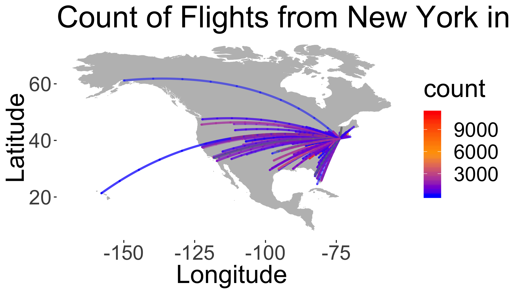

Data Wrangling 2
R Script Download this file and open it (or copy-paste into a new script) with RStudio so you can follow along.
library(tidyverse)
library(nycflights13)Combining data sets
dplyr join methods

left_join(a, b, by = "x1")Join matching rows from b to a.right_join(a, b, by = "x1")Join matching rows from a to b.inner_join(a, b, by = "x1")Retain only rows in both sets.full_join(a, b, by = "x1")Join data. Retain all values, all rows.
Left Join
left_join(a, b, by = "x1") Join matching rows from b to a.

Right Join
right_join(a, b, by = "x1") Join matching rows from a to b.

Inner Join
inner_join(a, b, by = "x1") Retain only rows in both sets.

Full Join
full_join(a, b, by = "x1") Join data. Retain all values, all rows.

flights%>%
select(-year,-month,-day,-hour,-minute,-dep_time,-dep_delay)%>%
glimpse()## Observations: 336,776
## Variables: 12
## $ sched_dep_time <int> 515, 529, 540, 545, 600, 558, 600, 600, 600, 60...
## $ arr_time <int> 830, 850, 923, 1004, 812, 740, 913, 709, 838, 7...
## $ sched_arr_time <int> 819, 830, 850, 1022, 837, 728, 854, 723, 846, 7...
## $ arr_delay <dbl> 11, 20, 33, -18, -25, 12, 19, -14, -8, 8, -2, -...
## $ carrier <chr> "UA", "UA", "AA", "B6", "DL", "UA", "B6", "EV",...
## $ flight <int> 1545, 1714, 1141, 725, 461, 1696, 507, 5708, 79...
## $ tailnum <chr> "N14228", "N24211", "N619AA", "N804JB", "N668DN...
## $ origin <chr> "EWR", "LGA", "JFK", "JFK", "LGA", "EWR", "EWR"...
## $ dest <chr> "IAH", "IAH", "MIA", "BQN", "ATL", "ORD", "FLL"...
## $ air_time <dbl> 227, 227, 160, 183, 116, 150, 158, 53, 140, 138...
## $ distance <dbl> 1400, 1416, 1089, 1576, 762, 719, 1065, 229, 94...
## $ time_hour <dttm> 2013-01-01 05:00:00, 2013-01-01 05:00:00, 2013...Let’s look at the airports data table (?airports for documentation):
glimpse(airports)## Observations: 1,458
## Variables: 8
## $ faa <chr> "04G", "06A", "06C", "06N", "09J", "0A9", "0G6", "0G7", ...
## $ name <chr> "Lansdowne Airport", "Moton Field Municipal Airport", "S...
## $ lat <dbl> 41.13047, 32.46057, 41.98934, 41.43191, 31.07447, 36.371...
## $ lon <dbl> -80.61958, -85.68003, -88.10124, -74.39156, -81.42778, -...
## $ alt <int> 1044, 264, 801, 523, 11, 1593, 730, 492, 1000, 108, 409,...
## $ tz <dbl> -5, -6, -6, -5, -5, -5, -5, -5, -5, -8, -5, -6, -5, -5, ...
## $ dst <chr> "A", "A", "A", "A", "A", "A", "A", "A", "U", "A", "A", "...
## $ tzone <chr> "America/New_York", "America/Chicago", "America/Chicago"...Now complete the task here by yourself or in small groups.
Extras
If you made it through the material above, here’s an example of some more ‘advanced’ coding to extract the geographic locations for all flights and plotting the connections as ‘great circles’ on a map. This is just meant as an example to illustrate how one might use these functions to perform a more advanced analysis and spatial visualization.
Join destination airports
library(geosphere)
library(rgdal)
library(maps)
library(ggplot2)
library(sp)
library(rgeos)data=
select(airports,
dest=faa,
destName=name,
destLat=lat,
destLon=lon)%>%
right_join(flights)%>%
group_by(dest,
destLon,
destLat,
distance)%>%
summarise(count=n())%>%
ungroup()%>%
select(destLon,
destLat,
count,
distance)%>%
mutate(id=row_number())%>%
na.omit()## Joining, by = "dest"NYCll=airports%>%filter(faa=="JFK")%>%select(lon,lat) # get NYC coordinates
# calculate great circle routes
rts <- gcIntermediate(as.matrix(NYCll),
as.matrix(select(data,destLon,destLat)),
1000,
addStartEnd=TRUE,
sp=TRUE)
rts.ff <- fortify(
as(rts,"SpatialLinesDataFrame")) # convert into something ggplot can plot
## join with count of flights
rts.ff$id=as.integer(rts.ff$id)
gcircles <- left_join(rts.ff,
data,
by="id") # join attributes, we keep them all, just in caseNow build a basemap using data in the maps package.
base = ggplot()
worldmap <- map_data("world",
ylim = c(10, 70),
xlim = c(-160, -80))
wrld <- c(geom_polygon(
aes(long, lat, group = group),
size = 0.1,
colour = "grey",
fill = "grey",
alpha = 1,
data = worldmap
))Now draw the map using ggplot
base + wrld +
geom_path(
data = gcircles,
aes(
long,
lat,
col = count,
group = group,
),
alpha = 0.5,
lineend = "round",
lwd = 1
) +
coord_equal() +
scale_colour_gradientn(colours = c("blue", "orange", "red"),
guide = "colourbar") +
theme(panel.background = element_rect(fill = 'white', colour = 'white')) +
labs(y = "Latitude", x = "Longitude",
title = "Count of Flights from New York in 2013")
Colophon
This exercise based on code from here.